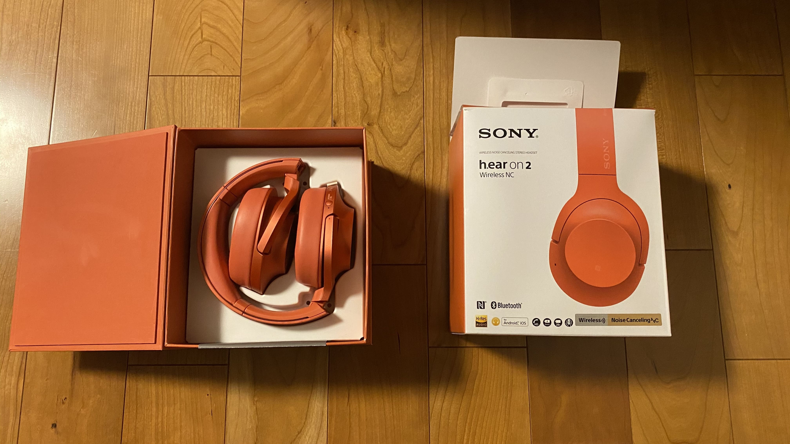
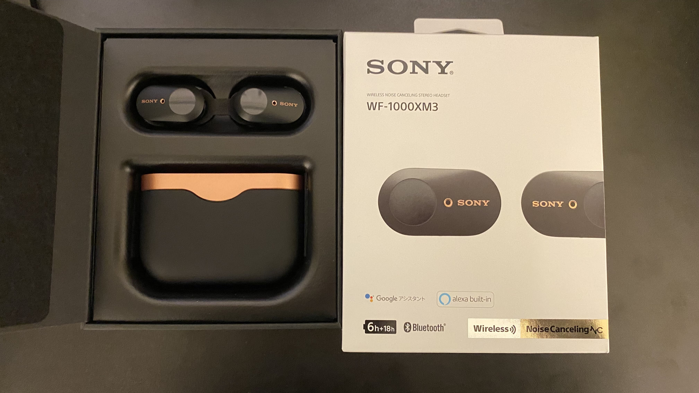
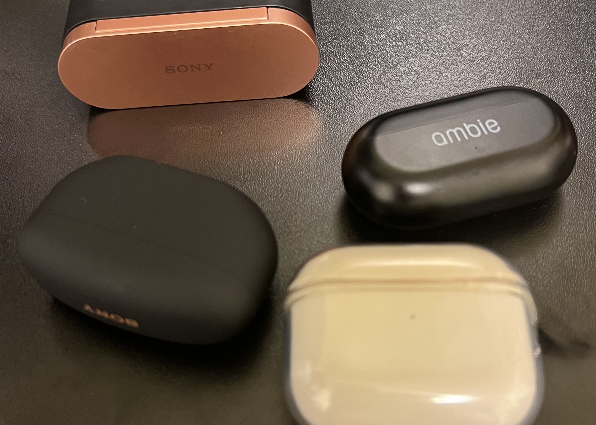

僕は音楽を聴くことが好きで、
JPOP、KPOP、クラシック、バンドなど幅広い分野を聞きます。
音楽は僕にとってリラックスする時間であり、
日常のストレスを忘れさせてくれる大切な存在です。
年間8万分(約1300時間)以上音楽を聴いています。
元々少しピアノをやっていた影響で、クラシックもよく聞きます。
特に好きなアーティストを表にまとめてみました。
| ジャンル | アーティスト |
|---|---|
| J-POP | 米津玄師 |
| tuki. | |
| あいみょん | |
| ずっと真夜中でいいのに。 | |
| SEKAI NO OWARI | |
| K-POP | aespa |
| IVE | |
| STAYC | |
| Stray Kids | |
| バンド | WANIMA |
| クリープハイプ | |
| クラシック | 久石譲 |
| ショパン | |
| リスト |
ここに挙げたアーティスト以外にも
たくさんのアーティストを聴いています。
音楽は僕にとってなくてはならない存在です。
また、イヤホンやヘッドホン、スピーカーにもこだわっています。
小学生の時におこづかいを貯めて初めて買ったヘッドホンは
SONYのh.ear on 2 WH-H900Nです。

(初めて買ったヘッドホン)
これはノイズキャンセリング機能がついており、
周囲の騒音を低減してくれるので、
静かな環境で音楽を楽しむことができます。
音質も良く、低音から高音までバランスよく再生してくれます。
また、そのほかにも
色々なイヤホンやヘッドホン、スピーカーを持っています。

(自分で初めて買ったワイヤレスイヤホン SONY WF-1000XM3)
(左上：SONY WF-1000XM3 右上：ambie AM-TW01 左下：SONY WF-1000XM5 右下 Apple AirPods(第３世代)) (左上スピーカー：JBL CHARGE 4 右上スピーカー：KENWOOD K515)
(左上スピーカー：JBL CHARGE 4 右上スピーカー：KENWOOD K515)
個人的な意見ですが、いいものを買って長く使う方がいいと思います。
やっぱり音楽は価格で音質の差がすごく出ます。
一回高いものを買えばモデルチェンジをしても
そこまで音質の差はでないです。
これからも色々な音楽を聞いてみます。